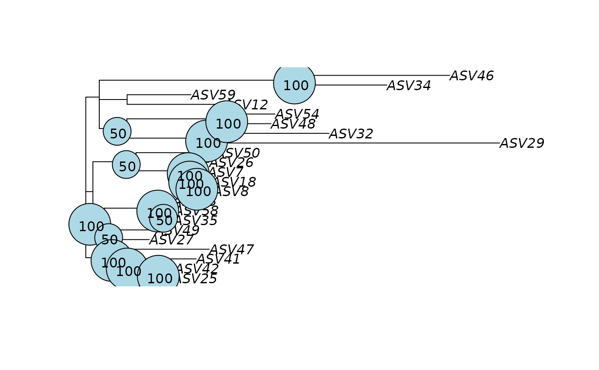
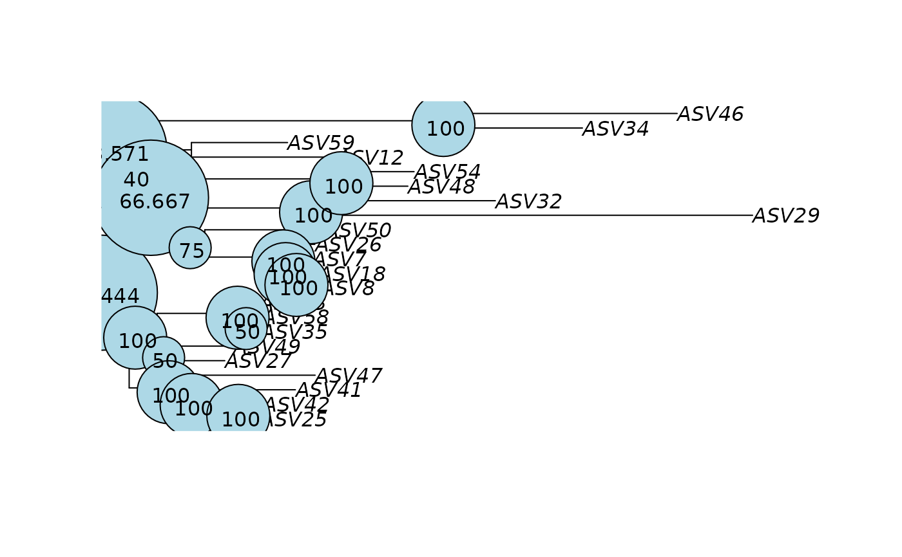

Build phylogenetic trees from refseq slot of a phyloseq object
Source:R/dada_phyloseq.R
build_phytree_pq.Rd![[Experimental]](figures/lifecycle-experimental.svg)
This function build tree phylogenetic tree and if nb_bootstrap is set, it build also the 3 corresponding bootstrapped tree.
Default parameters are based on https://doi.org/10.12688/f1000research.8986.2 and phangorn vignette Estimating phylogenetic trees with phangorn. You should understand your data, especially the markers, before using this function.
Note that phylogenetic reconstruction with markers used for metabarcoding are not robust. You must verify the robustness of your phylogenetic tree using taxonomic classification (see vignette Tree visualization) and bootstrap or multi-tree visualization
Usage
build_phytree_pq(
physeq,
nb_bootstrap = 0,
model = "GTR",
optInv = TRUE,
optGamma = TRUE,
rearrangement = "NNI",
control = phangorn::pml.control(trace = 0),
optNni = TRUE,
multicore = FALSE,
...
)Arguments
- physeq
(required): a
phyloseq-classobject obtained using thephyloseqpackage.- nb_bootstrap
(default 0): If a positive number is set, the function also build 3 bootstrapped trees using
nb_bootstrapbootstrap samples- model
allows to choose an amino acid models or nucleotide model, see
phangorn::optim.pml()for more details- optInv
Logical value indicating whether topology gets optimized (NNI). See
phangorn::optim.pml()for more details- optGamma
Logical value indicating whether gamma rate parameter gets optimized. See
phangorn::optim.pml()for more details- rearrangement
type of tree tree rearrangements to perform, one of "NNI", "stochastic" or "ratchet" see
phangorn::optim.pml()for more details- control
A list of parameters for controlling the fitting process. see
phangorn::optim.pml()for more details- optNni
Logical value indicating whether topology gets optimized (NNI). see
phangorn::optim.pml()for more details- multicore
(logical) whether models should estimated in parallel. see
phangorn::bootstrap.pml()for more details- ...
other params for be passed on to
phangorn::optim.pml()function
Details
This function is mainly a wrapper of the work of others.
Please make a reference to phangorn package if you
use this function.
Examples
library("phangorn")
#> Loading required package: ape
#>
#> Attaching package: ‘ape’
#> The following object is masked from ‘package:dplyr’:
#>
#> where
# data(data_fungi)
df <- subset_taxa_pq(data_fungi, taxa_sums(data_fungi) > 9000)
#> Cleaning suppress 0 taxa ( ) and 15 sample(s) ( BE9-006-B_S27_MERGED.fastq.gz / C21-NV1-M_S64_MERGED.fastq.gz / DJ2-008-B_S87_MERGED.fastq.gz / DY5-004-H_S97_MERGED.fastq.gz / DY5-004-M_S98_MERGED.fastq.gz / E9-009-B_S100_MERGED.fastq.gz / E9-009-H_S101_MERGED.fastq.gz / N22-001-B_S129_MERGED.fastq.gz / O20-X-B_S139_MERGED.fastq.gz / O21-007-M_S144_MERGED.fastq.gz / R28-008-H_S159_MERGED.fastq.gz / R28-008-M_S160_MERGED.fastq.gz / W26-001-M_S167_MERGED.fastq.gz / Y29-007-H_S182_MERGED.fastq.gz / Y29-007-M_S183_MERGED.fastq.gz ).
#> Number of non-matching ASV 0
#> Number of matching ASV 1420
#> Number of filtered-out ASV 1379
#> Number of kept ASV 41
#> Number of kept samples 170
df_tree <- build_phytree_pq(df, nb_bootstrap = 5)
#> Determining distance matrix based on shared 8-mers:
#> ================================================================================
#>
#> Time difference of 0.01 secs
#>
#> Clustering into groups by similarity:
#> ================================================================================
#>
#> Time difference of 0.01 secs
#>
#> Aligning Sequences:
#> ================================================================================
#>
#> Time difference of 0.27 secs
#>
#> Iteration 1 of 2:
#>
#> Determining distance matrix based on alignment:
#> ================================================================================
#>
#> Time difference of 0 secs
#>
#> Reclustering into groups by similarity:
#> ================================================================================
#>
#> Time difference of 0.01 secs
#>
#> Realigning Sequences:
#> ================================================================================
#>
#> Time difference of 0.2 secs
#>
#> Iteration 2 of 2:
#>
#> Determining distance matrix based on alignment:
#> ================================================================================
#>
#> Time difference of 0 secs
#>
#> Reclustering into groups by similarity:
#> ================================================================================
#>
#> Time difference of 0.01 secs
#>
#> Realigning Sequences:
#> ================================================================================
#>
#> Time difference of 0.16 secs
#>
#> Refining the alignment:
#> ================================================================================
#>
#> Time difference of 0.05 secs
#>
#> optimize edge weights: -6910.742 --> -6772.959
#> optimize edge weights: -6772.959 --> -6772.703
#> optimize topology: -6772.703 --> -6768.532 NNI moves: 2
#> optimize edge weights: -6768.532 --> -6768.518
#> optimize topology: -6768.518 --> -6768.518 NNI moves: 0
#> optimize edge weights: -6768.518 --> -6768.518
#> optimize edge weights: -7505.127 --> -7312.42
#> optimize edge weights: -7312.42 --> -7312.413
#> optimize topology: -7312.413 --> -7288.834 NNI moves: 10
#> optimize edge weights: -7288.834 --> -7288.829
#> optimize topology: -7288.829 --> -7288.829 NNI moves: 0
#> optimize edge weights: -7288.829 --> -7288.829
#> optimize edge weights: -7469.217 --> -7295.771
#> optimize edge weights: -7295.771 --> -7295.763
#> optimize topology: -7295.763 --> -7286.68 NNI moves: 4
#> optimize edge weights: -7286.68 --> -7286.68
#> optimize topology: -7286.68 --> -7286.68 NNI moves: 0
#> optimize edge weights: -7286.68 --> -7286.68
#> optimize edge weights: -7490.809 --> -7282.507
#> optimize edge weights: -7282.507 --> -7282.506
#> optimize topology: -7282.506 --> -7269.593 NNI moves: 5
#> optimize edge weights: -7269.593 --> -7269.593
#> optimize topology: -7269.593 --> -7269.593 NNI moves: 0
#> optimize edge weights: -7269.593 --> -7269.593
#> optimize edge weights: -7644.058 --> -7474.304
#> optimize edge weights: -7474.304 --> -7474.299
#> optimize topology: -7474.299 --> -7464.905 NNI moves: 4
#> optimize edge weights: -7464.905 --> -7464.903
#> optimize topology: -7464.903 --> -7464.903 NNI moves: 0
#> optimize edge weights: -7464.903 --> -7464.903
plot(df_tree$UPGMA)
plotBS(df_tree$UPGMA, df_tree$UPGMA_bs, main = "UPGMA")
plot(df_tree$NJ, "unrooted")
plot(df_tree$ML)
# plotBS(df_tree$ML_bs)
plotBS(df_tree$ML$tree, df_tree$ML_bs, p = 20, frame = "circle")

plotBS(
df_tree$ML$tree,
df_tree$ML_bs,
p = 20,
frame = "circle",
method = "TBE"
)

plot(consensusNet(df_tree$ML_bs))
plot(consensusNet(df_tree$NJ_bs))
ps_tree <- merge_phyloseq(df, df_tree$ML$tree)
#> Found more than one class "phylo" in cache; using the first, from namespace 'phyloseq'
#> Also defined by ‘RNeXML’ ‘tidytree’
#> Found more than one class "phylo" in cache; using the first, from namespace 'phyloseq'
#> Also defined by ‘RNeXML’ ‘tidytree’
#> Found more than one class "phylo" in cache; using the first, from namespace 'phyloseq'
#> Also defined by ‘RNeXML’ ‘tidytree’
#> Found more than one class "phylo" in cache; using the first, from namespace 'phyloseq'
#> Also defined by ‘RNeXML’ ‘tidytree’